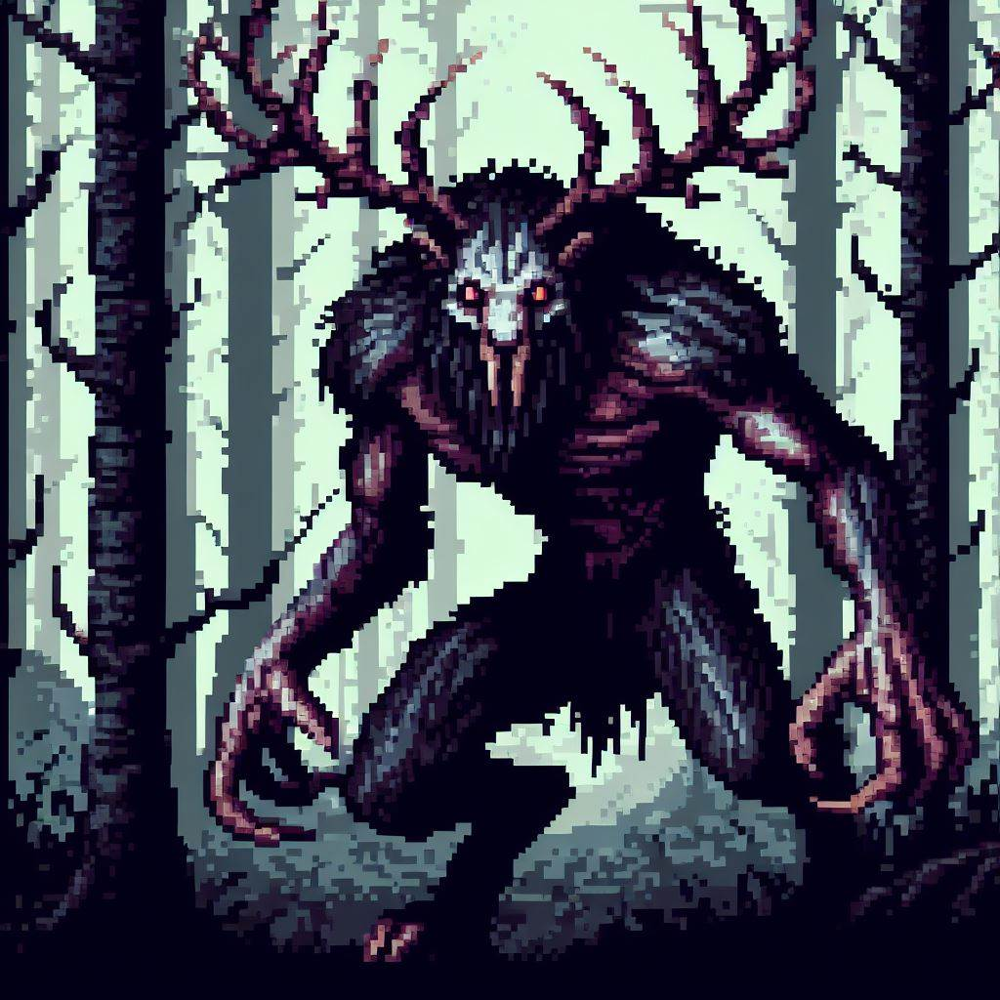

Homepage
Deep in the forest lurks a dangerous beast which feeds off of the flesh of unsuspecting travelers, the wendigo. The wendigo romes the forest, from village to village, hunting the villagers until no one remains, then moving on. If your village has the misfortune of being found by the wendigo, your best hope is to abandon the village and find somewhere else to live. Algonquin legend has it that the wendigo was formed from greed and jealousy, and now romes the forest, always on the hunt, never getting enough.
You play as Itawi, an Algonquin boy whose village is being hunted by the wendigo. To save your village, you must defeat the wendigo, however, this will not be easy. You must venture into the forest -- the home of the wendigo -- and come out alive on the other side. The village is counting on you.
Game Concept
The Wendigo is an Algonquin legend of a fearsome creature who terrorizes villages. Created by the greed of people, the Wendigo hunts down villagers and eats them. Never getting enough, the Wendigo will lurk outside the village, preying on the inhabitants, until the village is gone and it moves on to its next target. You will play as an Algonquin boy whose village is under threat by a wendigo. You must brave the danger and venture into the woods in order to find the Wendigo's weakness and save your village.
Protagonist: Itawi.
He is a normal boy from an Algonquin village. No special characteristics, except he is very determined.
Antagonist: Wendigo.
A powerful creature that inhabits the woods, and eats the villagers.
Conflict.
One day, a hunting party does not come back to the village. The villagers determine there is a wendigo which is attacking the hunters. The villagers devise a plan, but they need a volunteer. The boy volunteers to help stop the wendigo.
Culture.
The story of the Wendigo originated from the Native American Algonquin people. There is evidence to suggest that these people arrived in North Carolina between 9500 B.C. and 8000 B.C.The Algonquin were not only hunter gatherers, they also cultivated some of their food as well. The Algonquin stretched from the Carolinas up into parts of Canada. Their houses were often covered with bark. The Wendigo is a monster from algonquin folklore. It is depicted in multiple different ways, ranging from an evil spirit possessing humans, to a hideous monster. This creature is seen as the embodiment of negative characteristics such as greed.| Genre: | Action-Adventure |
|---|---|
| Target Audience: | Those who are Ages 10+ and enjoy story based adventures |
| ESRB Rating: | Everyone 10+ contains mild fantasy violence |
| Mechanics: | Exploration, problem solving, combat |
| Platforms: | Steam, Linux, Windows, MacOS |
Characters
Itawi
Itawi is a village boy. He is smart and fast, shares ideas when he them. Once he sets his mind to something, he gets it done. Itawi also loves the forest, and prides himself on his ability to nevigate and hide in the forest.
Wendigo
The wendigo. Born from the greed of humans, now hunts them for food, but is always hungry, never eating enough. Very few of those who find themselves hunted by the wendigo ever make it out of the forest.
Merchandise
T-Shirt
A T-Shirt with the 'The Forest Hunts' logo. Purchasing this supports the creation of further projects, and wearing the shirt shows your love for this game and story.
Drawstring Bag
A bag to help you carry things, with the 'The Forest Hunts' logo. Purchasing this supports the creation of further projects, and using the bag shows your love for this game and story.
Glowing Stone Night Light
A stone, put in a fire until the point of cracking, glowing from the heat. This stone will provide light in the dark. Purchasing this shows your appreciation of the game and helps support future projects.
Wendigo Plush
The wendigo plushy. A fearsom beast to keep you company. Instead of hunting for food, this small creature just hunts for friends. Purchasing this shows your appreciation of the game and helps support future projects.
Transmedia
The Forest Hunts only covers defeating the wendigo. To extend this story, I will be releasing a graphical story depicting the creation of the wendigo. This was already very briefly touched on in the cinematic video, but this story will go into much more details. The addition of this extra content will provide a more emersive experience to the game. Below are some examples of scenes that will be in the story.

The village: before over harvesting
Hunting party: going to collect resources

The village: falling apart after over harvesting
The wendigo: born from the greed of the village
About
Hi! My name is Avery, but I go by KittKat online. I am the developer behind this project. I am, at the time of writing this, majoring in Computer Science and minoring in American Sign Language at Appalachian State University. I enjoy computer programming, and spend much of my free time working on developing apps. If you want to check out my other projects, you can go the the Apps section on my website!
This website was created for one of my App State classes, MTL2010 "NARRATIVE, NEW MEDIA & GAMING", Spring 2024. The goal of this project was to create a game concept based on a cultural story, then use a website to present this game concept. I chose the story of the wendigo for my project. I first head this story at a summer camp that I used to attend. That camp has been a very influential part of my life, and the story of the wendigo has stuck with me. I even created my own variation of the story, which I told at the camp (and maybe it will be in a sequal game).
Beyond the sentimental relation to summer camp, I feel there is a deeper meaning to this story, which still has relevence today. The way I know the wendigo story, the wendigo is essentially the embodyment of greed, which causes devistating destruction. Thinking about that in terms of modern society, we take what we want without regard for its affect on the enviroment. In a way, I think the consequences of this, global warming, shortage of resources, increasingly unstable enviroment, can be thought of as a form of the wendigo.
Resources
- Website Code: Written by me (https://kittkat.xyz)
- Website Host: GitHub Pages (https://pages.github.com/)
- Video Host: Youtube (https://youtube.com)
- ESRB Logo Generator: https://jsfiddle.net/stinkysGTI/94fzgLam/62/
- Steam Logo: https://en.m.wikipedia.org/wiki/File:Steam_icon_logo.svg
- Linux Logo: https://upload.wikimedia.org/wikipedia/commons/thumb/3/35/Tux.svg/150px-Tux.svg.png
- Windows Logo: https://upload.wikimedia.org/wikipedia/commons/thumb/5/5f/Windows_logo_-_2012.svg/768px-Windows_logo_-_2012.svg.png
- MacOS Logo: https://upload.wikimedia.org/wikipedia/commons/thumb/a/ab/Icon-Mac.svg/768px-Icon-Mac.svg.png
- Cinematic Music: https://pixabay.com/music/main-title-awaken-136824/
-
Standard Merch Designs: https://www.customink.com/
- T-Shirt
- Drawstring Bag
-
AI Generated Images: https://designer.microsoft.com/
- Banner image
- Itawi character image
- Wendigo character image
- All images in cinimatic sequense/trailer
- Glowing stone merch image
- Wendigo plushy merch image
-
Story References:
- https://en.wikipedia.org/wiki/Wendigo
- https://en.wikipedia.org/wiki/List_of_Algonquian_personal_names
- https://www.nps.gov/articles/carolinaalgonquian.htm
- https://guides.loc.gov/quebec/indigenous-peoples
- https://www.roanokeisland.com/blog/2020/07/24/thriving-land-algonquin-food
- https://www.americanhauntingsink.com/wendigo
{kind=link}
{kind=link}
{kind=link}
{kind=link}